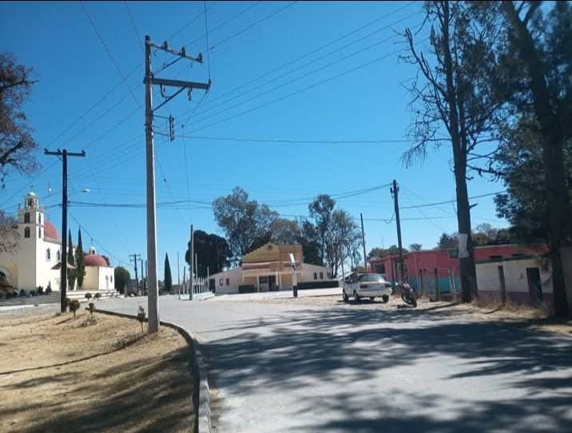
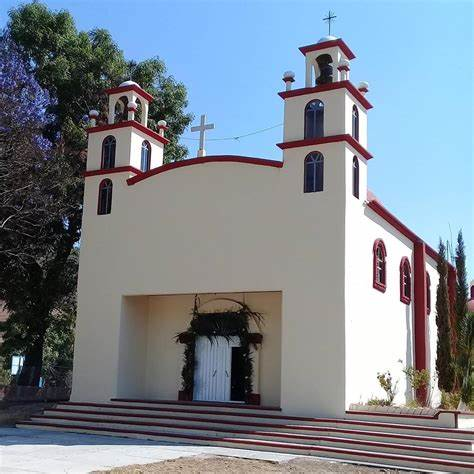
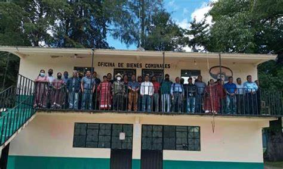
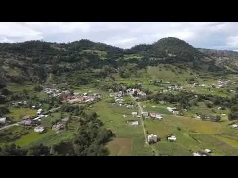
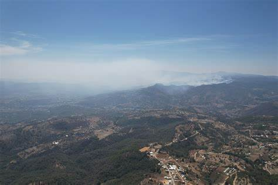

| Principal Historia Curiosidades Contacto Ubicacion |  
   |
San José Xochixtlán es una localidad en el Municipio de San Martín Itunyoso, en el estado de Oaxaca, México. Tiene una población de 824 habitantes y está a 2,300 metros de altura. Es el segundo pueblo más poblado en el municipio. La comunidad de San José Xochixtlán no recibe dinero del Presupuesto de Egresos de la Federación desde hace 16 años, y su población ha sobrevivido San José Xochixtlán, el pueblo al que México abandonó SAN MARTÍN ITUNYOSO, Oax (EL UNIVERSAL).- El municipio de Itunyoso dejó inconclusa en 2002 la ampliación de la red eléctrica en Xochixtlán. Hasta la fecha, cerca de 50 familias viven sin electricidad, agua potable ni servicios de salud, ya que las solicitudes de obras deben ser autorizadas por las autoridades municipales de San Martín Itunyoso, explica a EL UNIVERSAL José Tereso Cruz Reyes, agente municipal de San José Xochixtlán. El 23 de noviembre, mientras bloqueaban la caseta de peaje de Huitzo en la carretera que conduce a la Ciudad de México, sitio San Jose Xochixtlan un poblador y topil de 29 años fue herido de bala luego de que un hombre disparara contra ellos. Falleció cuatro días después. Pese a no recibir los recursos del municipio durante más de una década, fue hasta 2017 que los pobladores de Xochixtlán presentaron una demanda ante la Sala de Justicia Indígena del Tribunal Superior de Justicia del Estado de Oaxaca (TSJO), que dictó sentencia a favor de la comunidad en marzo de 2019. El el municipio de Itunyoso debe entregar a San José Xochixtlán los recursos de 2018, 2019, 2020 y 2021. Con un cálculo basado en datos del Diario Oficial de la Federación (DOF) y del Instituto Nacional de Estadística , se calcula que a Xochixtlán le corresponden más de 4 millones de pesos al año. San José Xochixtlán ha sobrevivido principalmente de las cooperaciones y remesas de los migrantes triquis en otras entidades. |